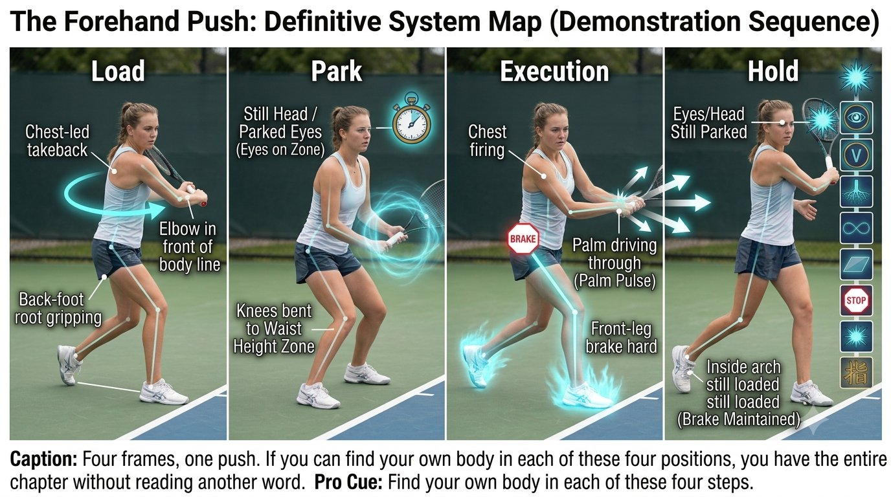
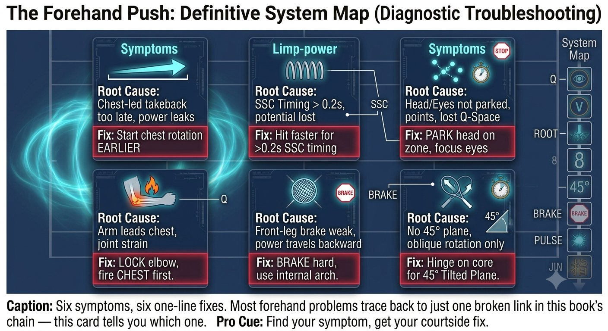

Chương 19: Hệ Thống Forehand Push
(Bản dịch tiếng Việt của Chapter 19 trong Sổ Tay Quần Vợt Thống Nhất)
Phân Tích Hoàn Chỉnh
Mọi phần tử từ Q-V-ROOT-8-45-Impulse-Kình, tích hợp vào một cú đánh duy nhất: cú forehand push.
Cú forehand không phải là một cú vung. Đó là một cú đẩy từ phía sau cây vợt. Cơ thể đẩy tay, và tay đẩy vợt.
— Henry Phạm

Hình 19.1
Bản Đồ Hệ Thống Forehand Push
Hệ push chính là sự hiện thân của cú forehand cho toàn bộ chuỗi Q-V-ROOT-8-45-Impulse-Kình.
Pha Nạp: Khi Bóng Rời Đối Thủ
– Mắt: theo dõi mềm trên bóng, đầu di chuyển, VOR bật.
– Chân: chân sau (chân phải cho người thuận tay phải) bám chặt trên cạnh trong. Bạn nên cảm thấy vòm chân nâng lên.
– Hông: đang xoay, với một độ căng cảm nhận được qua bụng từ hông sau đến sườn trước — đây là đường xoắn ốc đang nạp lực.

Hình 19.2
– Vợt: vung nạp do ngực dẫn dắt, không bao giờ do tay dẫn dắt. Khuỷu tay giữ ở trước đường cơ thể, cổ tay giữ lỏng, và đáy cán vợt chỉ về phía hàng rào bên.
Pha Đỗ: Tại Lúc Bóng Nảy
– Đầu: dừng lại. Bất động hoàn toàn trong không gian. Tiền đình lặng yên — đây là VOR lặng.
– Mắt: nhảy tới trước đến vùng tiếp xúc — 30 đến 45cm phía trước chân trước, ngang hông. Khóa lại. Nói "đỗ".
– Thân người: đầu gối gập để đưa vùng tiếp xúc lên ngang hông, thay vì tay rơi xuống chỗ bóng. Điều này giữ đường fascia dài ra.
– Kiểm tra bản thể cảm: không nhìn vào vợt, bạn có cảm nhận được lòng bàn tay đang hướng về hàng rào bên phía sau vợt không? Nếu có, bạn đã nạp xong.

Hình 19.3
Thực Thi: Vung Tiến
– Sự phản hồi của fascia: ngực bắn trước và kéo tay theo. Bạn cảm nhận trình tự cơ chéo bụng, rồi ngực, rồi lòng bàn tay — cánh tay chỉ đơn thuần là một sợi dây.
– Cảm giác: gót lòng bàn tay đẩy xuyên qua 12 inch của trái bóng. Không lên, không ngang — mà là xuyên qua. Một cú đẩy.
– Độ căng: 3/10, lên đến 6/10 lúc tiếp xúc trong 30 mili-giây, rồi trở lại 3/10. Cẳng tay không bao giờ siết chặt.
– Mặt vợt: một cách cầm semi-Western sẽ khép mặt vợt lại một chút, và điều đó là đúng cho vị trí bên trong — đừng bao giờ sửa nó bằng cổ tay.
– Phanh: chân trước duỗi thẳng và giậm mạnh, hông trước đập vào một bức tường. Cơ chéo bụng kích hoạt để dừng sự xoay của thân người một cách đột ngột.

Hình 19.4
– Bật: vì thân người đã dừng lại, tay và vợt vèo xuyên qua. Cảm giác đẩy của lòng bàn tay trở thành một cú xung — một inch đẩy xuyên qua, không phải một follow-through dài.
Mẹo Huấn Luyện
Cảm thấy bắp tay nóng rát hoặc khuỷu tay nhức nghĩa là bạn đã làm gãy đường truyền tại vai — một cú đẩy dùng cơ. Reset lại: vặn chân sau vào, và để ngực đẩy tay.
Pha Giữ: Sau Tiếp Xúc
– Mắt và đầu: vẫn đỗ trên điểm tiếp xúc. Bạn nên nghe thấy tiếng bóng đập vào vợt trước khi thấy nó bay đi đâu. Đếm "qua".
– Cân bằng: vòm trong của chân trước vẫn nên mang áp lực. Ngã lùi về sau nghĩa là bạn đã kéo bằng tay thay vì đẩy bằng đường xoắn ốc.
Tín Hiệu Lỗi: Điều Gì Đã Sai
Reset Trước Điểm: Năm Giây
1. Chân xuống đất: hơi nhấc ngón chân lên, ấn vào tripod (ngón cái, ngón út, gót chân). Cảm nhận vòm trong kích hoạt.
2. Đầu về ngang: cằm gập nhẹ, mắt ngang. Xoay đầu chậm một lần sang trái rồi phải. Cảm nhận hệ tiền đình lắng xuống.
3. Tay về 3/10: siết vợt lên 8/10, rồi thả về 3/10. Ngọ nguậy các ngón tay. Giữ cẳng tay mềm.
Thẻ Quét Nhanh Forehand Push
Nói theo thứ tự này trước mỗi rally:
VÒM CHÂN → CƠ CHÉO BỤNG → ĐẦU → ĐỖ → ĐẨY
Nguyên Lý Cốt Lõi
Cú forehand push không phải là một cú vung. Đó là một chuỗi từ đất đi lên: rễ, rồi V, rồi Q, rồi số 8, rồi 45 độ, rồi phanh, rồi xung. Khi nó vận hành đúng, bạn cảm thấy một độ căng từ chân đến lòng bàn tay, rồi một sự giải phóng — lòng bàn tay đẩy xuyên qua bóng trong khi mắt vẫn đỗ.
Danh Sách Kiểm Tra Forehand Push
CHÂN VẶN. ĐẦU BẤT ĐỘNG. MẮT ĐỖ. SỐ 8 NHỎ TRÊN 45°. PHANH. XUNG.
– Trước điểm: chân ở tripod, đầu ngang, tay ở 3/10.
– Nạp: chân sau vặn vào, cơ chéo bụng căng ra, ngực mở, cổ tay giữ lỏng.
– Đỗ: đầu dừng, mắt nhảy tới vùng tiếp xúc 30cm phía trước, nói "đỗ".
– Thực thi: ngực bắn trước, lòng bàn tay đẩy xuyên qua 12 inch, chân trước phanh.
– Giữ: mắt và đầu vẫn đỗ cho đến khi bóng qua lưới.
– Nếu bắp tay nóng rát hoặc khuỷu tay nhức, đường truyền đã gãy tại vai — cú đánh đã bị gồng cơ.
Chương Này Dẫn Đến Đâu
Chương này tích hợp Q-V-ROOT-8-45-Impulse-Kình vào hệ thống forehand push. Chương 20 bao quát backhand saber một tay. Chương 21 bao quát backhand hai tay dạng lai.